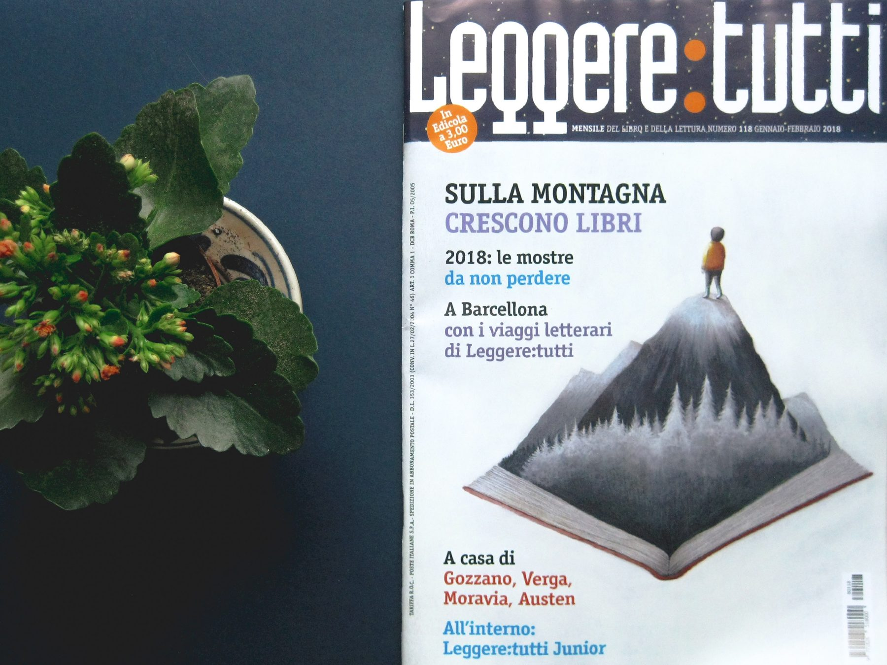
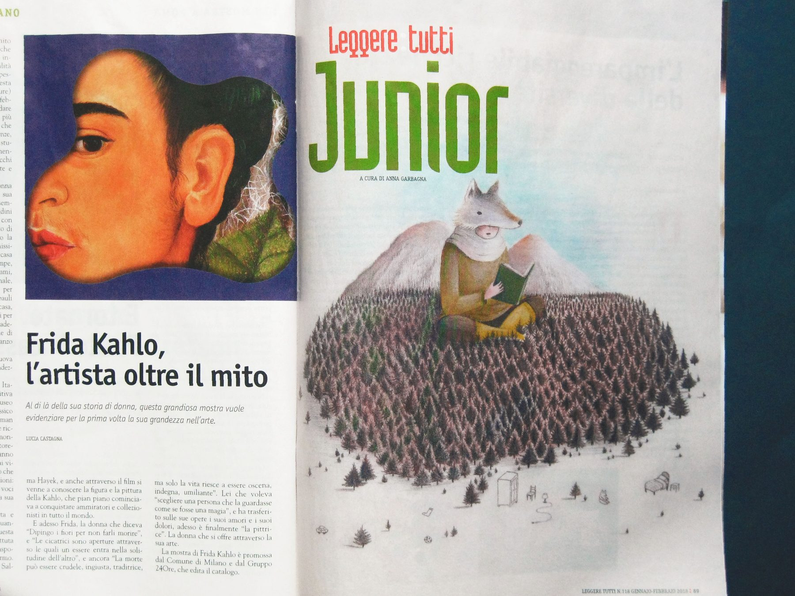
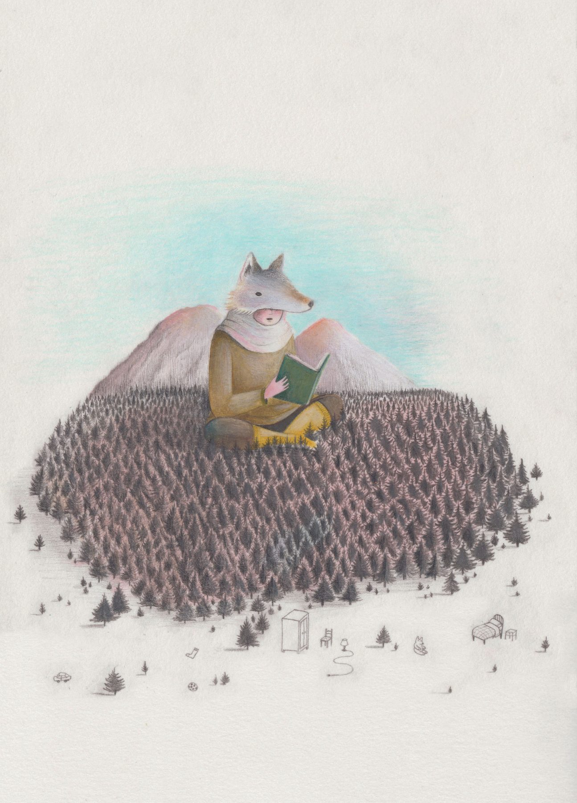
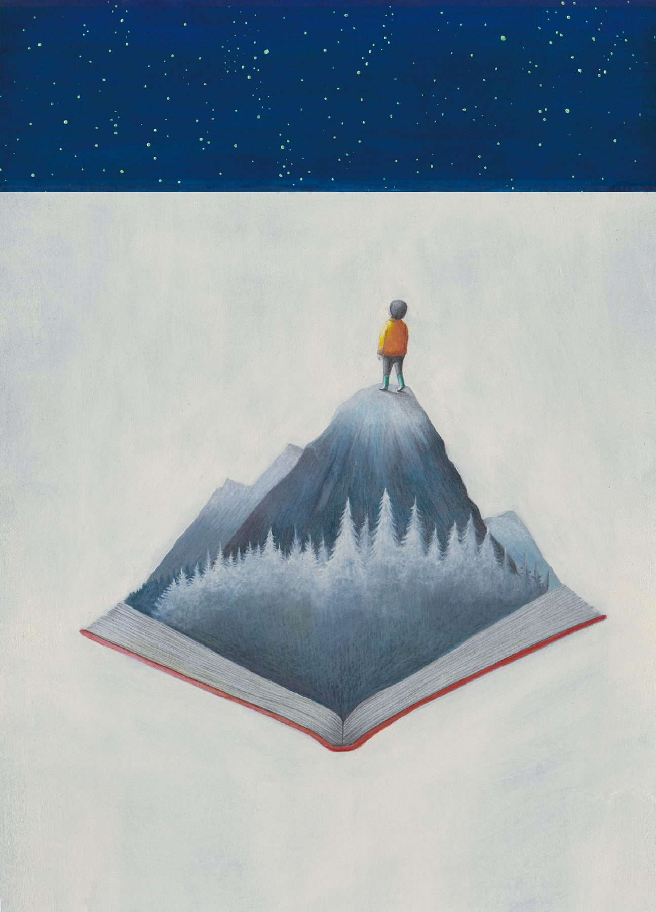

Progetto di copertina e illustrazione per articolo interno. L'immaginario unisce la vastità dei paesaggi innevati e dei cieli stellati al mondo della lettura e dell'infanzia selvatica, dove i bambini e le creature dei boschi si fondono con la natura in un viaggio di esplorazione e scoperta.


